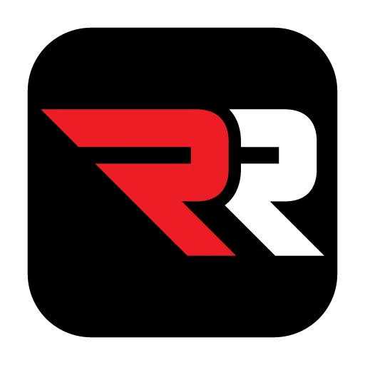

Electric bikes, big wheelies and honest reviews — from one of the biggest EV riders on YouTube.
Sur Ronster is an American YouTuber from Los Angeles, California. He built his name riding the Sur-Ron electric off-road bike — the bike his channel is named after.
It started in 2019 with a simple wheelie video. Since then the channel has grown into one of the biggest electric-vehicle channels in the world, packed with riding edits, unboxings, speed tests and custom builds.
Today he also curates Ronster Rides: a hand-picked line-up of the electric bikes, pit bikes, e-motos and karts he actually rides.
YouTube subscribers
Video views